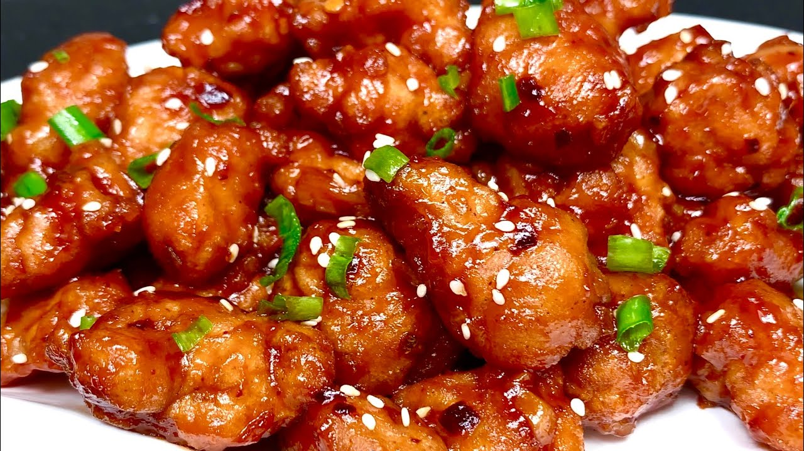

Crispy Honey Chilli Chicken

Ingredients
Ingredient
Amount
Chicken
500 g
Flour
200 g
Salt
To taste
Pepper
To taste
Soy sauce
2 tbsp
White wine vinegar
3 tsp
Honey
50 g
Garlic
3 cloves
Sriracha chilli garlic sauce
2-3 tbsp
Rice or noodles
250 g
Instructions
Cut the chicken breast into thin strips
Season the chcicken strips with salt and pepper and coat each piece with flour
Pre-heat the oil and fry the coated chicken pieces until light brown
Add minced garlic to the pan
While chicken is frying, make the sauce: mix the soy sauce, white wine vinegar, honey and sriracha chilli garlic sauce together
Pour the sauce mixture in and stir until the sauce starts to thicken a bit
Serve with rice or noodles
Source